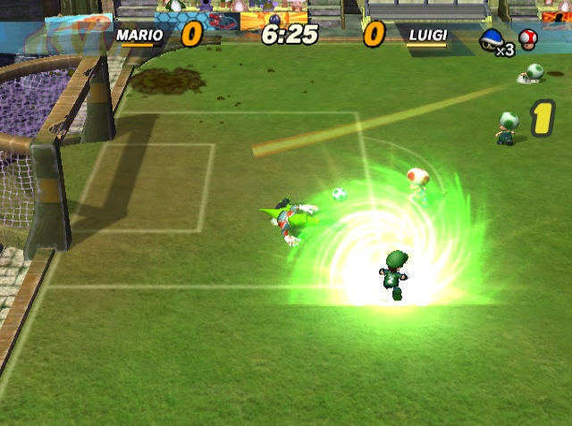
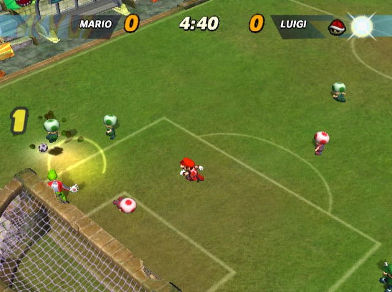
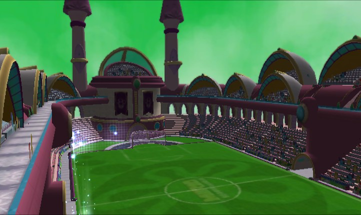
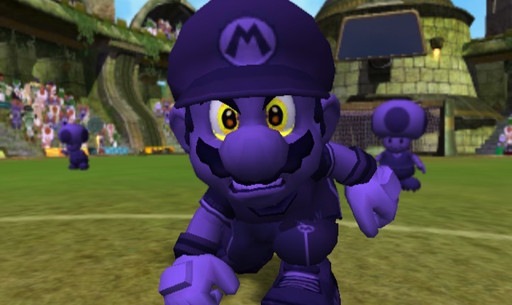

On the field

Captain powersOne per captain, on the D-pad, once the captain glows. Luigi's tornado is the beta's Twister.

Four more camerasClose, end to end, diagonal or retro top-down, also from the pause menu.

The Lost PalacePeach's stadium from the beta, back as the eighth stadium.

Mirror matchesThe same captain on both sides, the away team in shadow, metal or gold.
Changelog
- 0.2 beta
- Fixed Crater Field hanging while it loads in Dolphin.
- 0.1 beta
- Initial release.
Credits
A very fun reverse engineering project, mostly done by me. :) However, it couldn't exist without these awesome people. Thank you!!
- Decompilation by yannicksuter and the smstrikers-decomp team. Every change was written against it.
- Debug codes by Ralf on gc-forever, which showed us the game's debug switches for the Debug page.
- Thanks to Next Level Games, whose beta content is switched back on here, to RenolY2 for gc-c-kit and to cristian64 for MKDD Extender.